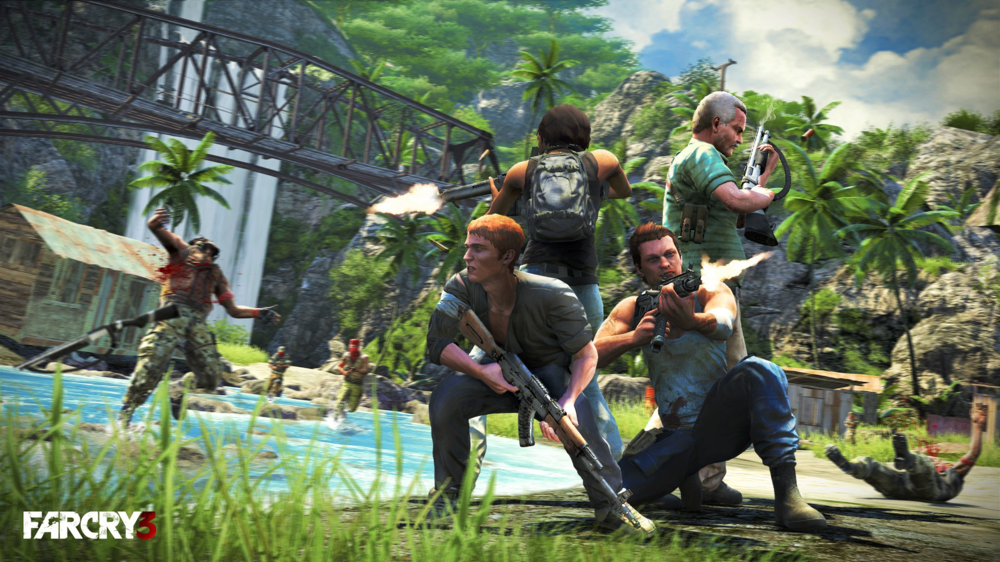
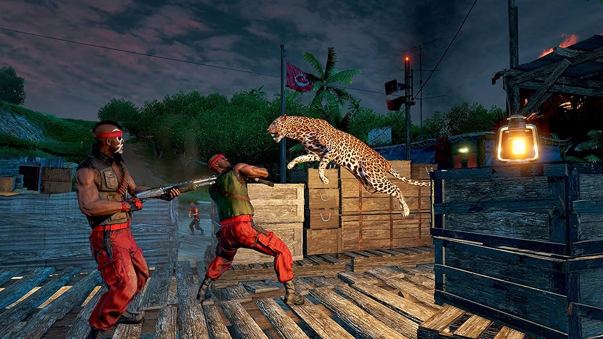

It is the third main installment in the
Far Cry series after Far Cry 2. The game takes place on the fictional Rook
Islands, a tropical archipelago which can be freely explored by players.
Gameplay focuses on combat and exploration. Players can use a variety of
weapons to defeat human enemies and hostile wildlife, and the game
features elements found in role-playing games such as skill trees and
experience. After a vacation goes awry, protagonist Jason Brody must save
his friends, who have been kidnapped by pirates, and escape from the
island and its unhinged inhabitants. Ubisoft Montreal collaborated with
Ubisoft's global development team, including Massive Entertainment,
Ubisoft Shanghai, Ubisoft Bucharest, Ubisoft Reflections and Red Storm
Entertainment.

The game's development was partially restarted in 2010
after the departure of several key creative staff. The team evaluated the
feedback for Far Cry 2 and identified areas that needed to be improved or
removed. The team spent considerable time designing the island, which they
described as the "second most important character" in the game.
Inspirations were taken from films and TV shows such as Apocalypse Now and
Lost, as well as video games The Elder Scrolls V: Skyrim and Red Dead
Redemption. Michael Mando was hired to portray Vaas Montenegro, an
antagonist the team compared to Darth Vader. The game was announced in
June 2011 and Ubisoft promoted the game with various companion apps,
webseries and crossover. It was released for Microsoft Windows,
PlayStation 3 and Xbox 360 in November 2012.

The game received critical
acclaim upon release, with praise directed at its characters (particularly
Vaas), world design, visuals, progression, and gameplay, though the game's
multiplayer modes received criticism. Despite weak pre-order sales, the
game was a commercial success, selling 10 million copies. It was nominated
for multiple year-end accolades including Game of the Year and Best
Shooter awards by several gaming publications. It has also been cited as
one of the greatest video games ever made. Ubisoft supported the game with
downloadable content and released Far Cry 3: Blood Dragon, the game's
standalone expansion, in 2013. A successor, Far Cry 4 was released in
November 2014. The game was re-released for PlayStation 4 and Xbox One in
June 2018.